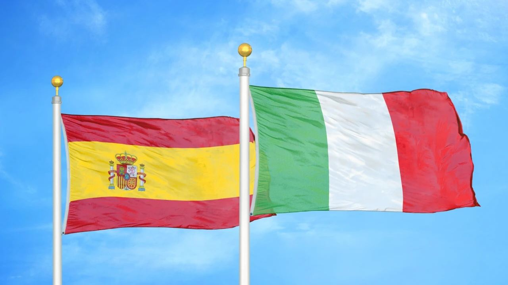

Kupno nieruchomości
Hiszpania czy Włochy – gdzie kupić dom?
 Autor: Aleksandra Kobus · · aktualizacja · 4 min czytania
Autor: Aleksandra Kobus · · aktualizacja · 4 min czytania

W skrócie
Oba kraje mają euro, dobrą publiczną służbę zdrowia i piękne wybrzeża. Hiszpania zwykle wygrywa, jeśli szukasz nowoczesnego domu nad morzem ze słońcem przez cały rok. Na wybrzeżu jest dużo nowych mieszkań, zakup jest szybki, a prowizję agencji płaci zwykle sprzedający.
Włochy wygrywają zabytkowymi miasteczkami i wsią i bywają tańsze w głębi kraju, ale wiele domów wymaga remontu, a zimy poza samym południem są chłodniejsze. Koszty zakupu w obu krajach to około 10–15% ceny.
Hiszpania czy Włochy? Wielu naszych klientów rozważa oba kraje. Porównujemy to, co najważniejsze przy zakupie drugiego domu: koszty, rodzaj mieszkań, klimat i wynajem.
Porównanie
| Hiszpania (wybrzeże) | Włochy | |
|---|---|---|
| Podatek przy zakupie z rynku wtórnego | Od ceny: 9% w regionie Walencji, 7% w Andaluzji | 9% od wartości katastralnej (drugi dom) |
| Nowe mieszkanie | 10% VAT + 1,2–1,4% opłaty skarbowej | 10% VAT (drugi dom) |
| Prowizja agencji | Zwykle płaci sprzedający | Kupujący płaci zwykle 2–4% + VAT |
| Roczny podatek od nieruchomości | IBI, zwykle kilkaset euro | IMU od drugiego domu, często wyższy |
| Oferta | Dużo nowych mieszkań i nowoczesnych willi | Więcej starych i zabytkowych domów |
| Zima na wybrzeżu | Łagodna, w dzień około 16–18 °C | Łagodna na południu, chłodniej na północy |
| Lotniska | Alicante, Málaga, Walencja, Murcja | W całym kraju |
Dane za 2026 r. Podatki się zmieniają, sprawdź je przed zakupem.
Koszty zakupu i podatki
Łączny koszt zakupu jest podobny, ale składa się z innych elementów. W Hiszpanii przy zakupie z rynku wtórnego płacisz podatek od ceny (w regionie Walencji 9%, powyżej 1 mln € 11%, w Andaluzji 7%), a przy nowym mieszkaniu 10% VAT i opłatę skarbową. Prowizja agencji jest zwykle wliczona w cenę. We Włoszech podatek 9% liczy się od wartości katastralnej, często dużo niższej niż cena, ale kupujący zwykle płaci część prowizji, a notariusz jest droższy. Zobacz jak kupić mieszkanie w Hiszpanii.
Jakie domy są na sprzedaż
To największa różnica. Na hiszpańskim wybrzeżu w ostatnich 20 latach dużo zbudowano i wciąż powstają nowe osiedla. Możesz wybrać nowy apartament z basenem i widokiem na morze albo nowoczesną willę z gwarancją dewelopera. Zobacz rynek pierwotny w Hiszpanii.
We Włoszech nowych mieszkań jest mniej. Na sprzedaż są często stare domy na wsi, kamienice i zabytkowe wille. Bywają tańsze, ale remont jest częsty i kosztowny. W najbardziej znanych miejscach, jak jezioro Como czy Wybrzeże Amalfitańskie, ceny są bardzo wysokie.
Klimat i codzienne życie
- Klimat – Costa Blanca i Costa del Sol mają ponad 300 słonecznych dni w roku i łagodne zimy. We Włoszech tak łagodnie jest tylko na samym południu i na wyspach.
- Życie międzynarodowe – na hiszpańskim wybrzeżu mieszka wielu obcokrajowców, także Polaków, i łatwo o usługi dla zagranicznych właścicieli. Włochy są bardziej lokalne.
- Dojazd z Polski – do Alicante i Malagi lata wiele bezpośrednich połączeń z polskich miast przez cały rok.
- Koszty życia – podobne, Hiszpania bywa nieco tańsza w restauracjach i usługach. Zobacz ile kosztuje życie w Hiszpanii.
Wynajem
Oba kraje ściśle regulują wynajem wakacyjny. W Hiszpanii każdy region prowadzi własny rejestr licencji turystycznych, a we Włoszech każdy wynajem wakacyjny potrzebuje krajowego kodu CIN. Nierezydent z UE płaci w Hiszpanii 19% podatku od dochodu z najmu po odliczeniu kosztów. Kurorty na hiszpańskim wybrzeżu mają chętnych prawie przez cały rok. Zobacz przepisy o najmie krótkoterminowym.
Przykład: 400 000 € na drugi dom
Za 400 000 € na Costa Blanca kupisz nowy apartament z dwiema lub trzema sypialniami, basenem i widokiem na morze, gotowy do zamieszkania. Koszty zakupu to około 47 000–48 000 € (VAT 10% i opłata skarbowa 1,4% plus notariusz i rejestr). We Włoszech za podobną kwotę kupisz np. stary dom na wsi w Apulii z ogrodem, ale do ceny często dochodzi remont, a prowizja agencji dla kupującego to kolejne 8 000–16 000 € plus VAT.
Najczęstsze pytania
Gdzie taniej kupić dom, w Hiszpanii czy we Włoszech?
Średnie ceny nie są dużo niższe w Hiszpanii, a włoska prowincja bywa tańsza. Na wybrzeżu Hiszpania daje więcej nowoczesnych mieszkań za te same pieniądze, a prowizję płaci zwykle sprzedający.
Gdzie jest cieplej zimą?
Na Costa Blanca i Costa del Sol zimy są łagodniejsze i bardziej słoneczne niż w większości Włoch. Podobnie jest tylko na południu Włoch i na wyspach.
Czy Polak może kupić dom w obu krajach?
Tak. Jako obywatel UE kupujesz w obu krajach na tych samych zasadach co miejscowi. W Hiszpanii potrzebujesz numeru NIE, we Włoszech numeru podatkowego codice fiscale.
Rozważasz Hiszpanię? Napisz do nas, pokażemy, co dostaniesz za swój budżet na Costa Blanca i Costa del Sol.